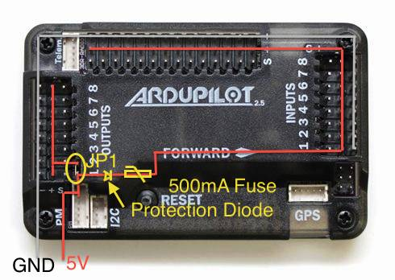
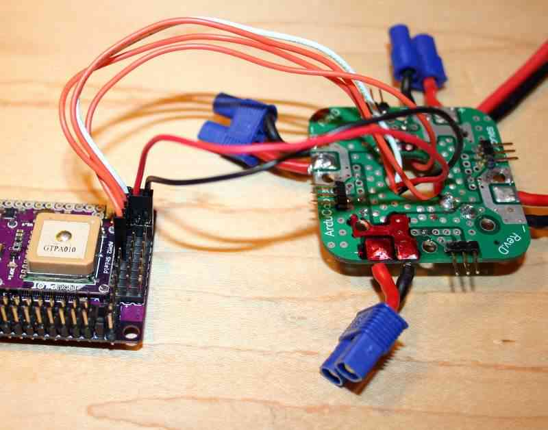
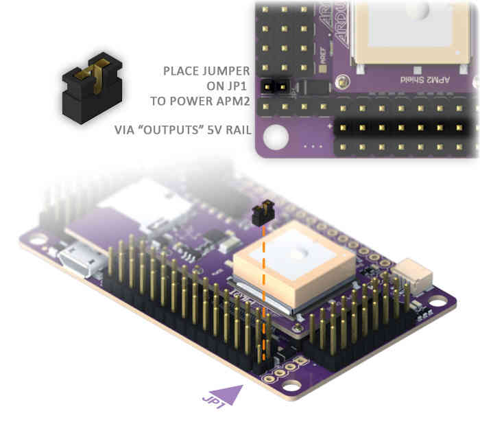

Archived:Powering the APM2¶
Warning
ARCHIVED
The APM2.x is end of life for use with ArduPilot. This article is made available for existing users.
This article demonstrates the options for powering the APM2.x board along with information about the requirements for connecting the power rail.
Overview¶
Like any computer, the APM needs a power supply with a steady clean voltage and sufficient current.
3DR provides an 3DR Power Module that supplies 2.25A at 5.37V. The module is designed to convert power from the main flight battery (18 Volt maximum). That module will supply sufficient power for your APM, and low power radios including your RC receiver (without servos). Your RC receiver can be powered from any APM Input (+5V and ground). This is normally done by connecting a 2 or 3 wire cable between an APM Input and one of the output channels on the RC radio.
If you are using any servos such as are required with a traditional helicopter or a camera gimbal, you will need to provide an additional dedicated power supply for the servos. The APM is intended to control servos, not power them.
The following sections describe the APM power circuit (you will need to understand this in order to design a power supply for your APM, or provide additional power), and your options for powering the APM and connected components.
APM power circuit¶
{kind=link}
There are two “sides” to the positive circuit in the board. Each side has positive-rails available for inputing power or distributing it to peripheral devices. The center row of pins in the three groups of pins (Outputs, Inputs, Analog) labeled “+” are referred to as a “positive-rail”. This means that the base of all the + pins are connected so they represent a single electrical path. The positive-rails of the Input and Analog group are connected together. So we have two separate positive circuits, one in the Outputs and the other made up of the Input/Analog.
All of the components on the board take power from various points on these rails, so it is necessary for both “sides” to be receiving +5V (within the specs below) for the board to function.
These positive-rails can be joined together by placing JP1 in its position on the board. This connects all the positive-rails ands provides power to both sides of the board, so that low-level power can be distributed to peripheral sensors and devices: 3DR Radios, sonar, RC Rx, etc. via the power-rails.
When using the power module, the circuit path is as follows:
From the power module connection the negative wire is connected to a negative-rail shared by the entire board regardless of JP1.
Positive voltage comes in to a T-junction. to the left is a path through the JP1 to the positive-rail of the Outputs. To the right it flows through an over-voltage, over-current, reverse-polarity protection(500mA fuse and 6V Zener diode). A side effect of passing through the Zener diode is a .37V loss, therefore input voltage should be bumped up by .37V to account for this. From here the positive voltage runs to the positive-rails of the Inputs and Analog. Inputs should not be used to power anything except your RC receiver.
Higher current loads such as servos should be powered from the power-rails (positive-negative) of the Output side. You must use an adequate voltage-regulator to provide power directly to the Output power-rails, all servo power leads will attach to these same rails (the signal wires can connect on the Analog “S” pins in the case of a camera gimbal). Since JP1 is removed in this scenario, the other “side” of the board will need power provided to its power-rails directly.
Alternative ways to power your board¶
If you are using the 3DR Power Module please find instructions here: Using the 3DR Power Module
Warning
Under no circumstances should you ever attempt to draw servo power from the analog input connector.
Warning
You may “control” servos from A9, A10 and A11 from the A0 - A11 I/O connector, but you must run servo power separately.
The A0 - A11 I/O connector cannot supply sufficient power for servos.
A9, A10 and A11 of the I/O connector come pre-wired to correct digital out for use as servo control lines.
For servo use, it is imperative that they have not been reassigned to analog use with the pads on the back of the APM board.
Non-technical description of the power supply requirements¶
The description below simply supplements and provides an alternate view of the information above.
The APM 2.5/2.6 board has two separate power circuits which make it very easy to power by a variety of methods.
A fused power circuit provides primary board and general I/O power: (It cannot provide power for servos).
The Other power circuit is for the OUTPUT connector power rail: (it can provide power for servos).
The jumper JP 1 determines whether the two power circuits are connected or separate.
If JP1 is removed, the power rail on the OUTPUT connector “Floats” and may be used to distribute power.
Although if JP1 is removed the OUTPUT connector cannot be used to supply power to the APM board.
It is possible to power the APM board from the Power Module connector or the OUTPUT or INPUT connectors.
Normally the APM 2.5/2.6 “Power Module” is used to provide primary APM 2.5 board and general I/O power.
Alternatively primary board power can be supplied by a BEC either from one of the ESCs or from an external BEC.
If servos are used, supplementary power is required.
Generally one power supply is provided for the board and one or more additional power supplies for the servos.
But if a sufficiently large external BEC is used it can supply power for both via the OUTPUT connector.
Only the OUTPUT connector can provide power for servos as the other circuit is fused.
The address connector is sometimes used provide servo signals, but the servos power must come from elsewhere.
How you are powering your APM board and or servos determines whether JP1 is installed or not.
(Whether the two power circuits are separated or connected).
All possible configurations are detailed Below.
The type of use will determine which options are available.
Copter can power the APM from a power module or a UBEC or a BEC from one of the ESCs and can power servos from a UBEC or from the other ESC’s BECs.
Plane can power the APM from the power module, the BEC from the flight motors ESC or a separate UBEC and can power servos from a separate UBEC or the flight motors BEC if it is large enough.
Rover can power the APM from the power module, the BEC from the drive motor’s ESC or a separate UBEC and can power the steering servo from a separate UBEC or the drive motors BEC if it is large enough.
Power supply rails connected requirements (JP1 Installed)¶
Warning
Do not exceed Abs MAX input voltages when connecting the power supply or you will damage your board.
Warning
Connecting USB when you have input voltages at the high end of the range (near Abs Max) can damage the board. Disconnect battery before connecting USB or test input voltages so they are within the specified range.
Power Options |
Nominal |
Abs MAX |
JP1 status |
Power on Output PWM connector |
5.37V +-0.5 |
6V |
JP1 connected |
Power on Input PWM connector |
5.00V +-0.25 |
5.5V |
JP1 connected |
No Power Module and no servos and power provided by BEC from ESC¶
If you do not have a power module and you are not using servos.
Ensure JP1 is installed and provide the necessary power via the BEC from one of your ESC’s.
Connect one ESC’s BEC power and ground wires to one pair of the APM OUTPUT connectors power and ground pins.
Clip the BEC power leads on the remaining 3 wire connectors.
Ensure that the ESC’s signal wires are connected to the appropriate APM OUTPUT connector signal pins.
You must ensure that your ESC’s BEC has a sufficient power capability (at least 2 amps).
Most 20 amp or higher ESCs have 2 amp BECs.
No Power Module but using servos and a high power External BEC¶
If you do not have a power module and are using servos you can use a high power external BEC.
Ensure JP1 is installed and provide the necessary power via a high power external BEC (5 to 10 amps or more).
The BEC power must be provided to one pair of the APM OUTPUT connector pins.
Warning
- Clip all power leads on the ESC’s BECs (they would conflict
with the external BEC).
Your servos will determine the size of the BEC required.
You should allow at least 2 or 3 amps extra to power the APM, receiver and to prevent (brown outs).
All of the positive power for driving each servo must come from the OUTPUT connector.
This is true even if the servo(s) signal wires are connected to the ADDRESS connector.
This option requires you to take responsibility for providing sufficient power to prevent brownout.
No Power Module but using servos and multiple BECs from ESC’s (A BEC for each servo)¶
If you do not have a power module and are using servos you can use multiple BECs from your ESC’s.
Ensure JP1 is installed and plug one of your ESC’s signal cables with power leads into the OUTPUT connector.
Remove the power and ground leads from the remaining ESCs signal cable connectors.
Plug the signal wire connector from each ESC onto the appropriate pin on the OUTPUT connector.
You can heat shrink these or plug them into a multi-wire connector appropriate for your copter.
Connect one pair of each of the remaining BEC power and ground lines to the power and ground of each individual servo.
Clip or heat shrink any remaining excess BEC power and ground leads.
The BEC power from one ESC must be provided to one pair of the APM output connector pins.
Plug only the signal input wire from your servos into the appropriate OUTPUT or ADDRESS connector pin.
Your ESC’s BECs should be at least 2 amps.
The ESC’s BEC grounds are in common with battery and internal signal ground so grounding the servos this way is OK.
Power supply rails not connected requirements (JP1 Not Installed)¶
Warning
Do not exceed Abs MAX input voltages when connecting the power supply or you will damage your board.
Warning
Connecting USB when you have input voltages at the high end of the range (near Abs Max) can damage the board. Disconnect battery before connecting USB or test input voltages so they are within the specified range.
Power Options |
Nominal |
Abs MAX |
JP1 status |
Power on Output PWM connector |
5.00V +-0.5 |
6V |
JP1 open |
Power on Input PWM connector |
5.00V +-0.25 |
5.5V |
JP1 open |
Power Module and no servos¶
If you have a power module and you are not using servos.
Ensure JP1 is not installed.
Provide the necessary power via the power module connected to the APM’s power module connector.
When connecting your ESCs to the OUTPUT connector clip the BEC power leads on each ESC’s 3 wire connector.
Or connect only the ESC’s signal wires to the OUTPUT connector.
Power Module and using servos with external BEC power¶
If you have a power module and an external BEC and you are using servos.
Ensure JP1 is Not installed
Provide APM board and receiver power via the power module connected to the power module connector.
Connect an external BEC with sufficient power for your servos to one pair of the OUTPUT connector power pins.
When connecting your ESCs to the OUTPUT connector clip the BEC power leads on each ESC’s 3 wire connector.
Or connect only the ESC signal wires to the OUTPUT connector.
Power Module and using servos with BEC power from one ESC¶
If you have a power module and you are using servos Remove JP1.
Provide APM and receiver power via the power module connected to the APM’s power module connector.
The BEC of a single ESC must provide sufficient power for all your servos.
When connecting your ESCs to the OUTPUT connector clip the BEC power leads on all but one of the ESC’s connectors.
Or connect only the ESC signal wires to the OUTPUT connector for all except one ESC.
And on that ESC connect all 3 wires to the OUTPUT connector.
No Power Module and using Servos with BEC power from two ESCs¶
If you do not have a power module and you are using servos remove JP1.
Provide APM and receiver power via 1 pair of ESC-BEC power wires connected to the APM INPUT connector power pins.
Also connect another of the ESCs power wire pair to the OUTPUT connector.
The BEC of a single ESC must provide sufficient power for all your servos.
Clip the signal power leads on your remaining ESC’s.
Connect all ESC signal wires to the appropriate OUTPUT connector pins.
APM Power Wiring Example¶
Warning
Do not exceed Abs MAX input voltages when connecting power supply or you will damage your board.
Warning
Connecting USB when you have input voltages at the high end of the range (near Abs Max) can damage the board. Disconnect battery before connecting USB or test input voltages so they are within the specified range.
On the bench, you’ll probably be powering the board via your USB cable while you set it up and test it. But in your aircraft, you’ll need to power it with your on board power system, which is usually your LiPo battery going through an ESC or the Power Module. In the case of a multicopter, this can come through your Power Distribution Board (PDB), which will break out the 5V output from the one of the electronic speed controls (ESCs) or the Power module which is wored directly to the battery.
In the picture below, the red and black wires are the 5b m hV power cable coming from a PDB. You can plug them into any two pins along the 5V and Ground (middle and outer) rows of pins on APM 2.5’s Output side. The other cable, which in this case is a four-wire cable with orange and white wires for a quadcopter, is the signal cable to the PDB, which are the wires that APM 2.5 will use to command each of the ESCs.
The picture below is of APM 2; but the concept is applicable to APM 2.5.
{kind=link}
It’s also possible to power APM 2.5 from two separate sources, one powering the RC system on the input side, and the other powering the output side (servos or ESCs). This is determined by a jumper on the JP1 pins (see below). If the jumper is on, which is the factory default, the board is powered from the OUTPUT rail or the USB. If the jumper is off, the board is powered from the INPUT rail, but the OUTPUT rail will need its own power source. This configuration is used if you want to have two separate power sources in your aircraft, one powering the servos and the other powering the electronics. The ideal input voltage is 5.37v +/-0.0v and may not be provided by a typical ESC.
Warning
Do not exceed Abs MAX input voltages when connecting power supply or you will damage your board.
In some cases it may be a good idea to set the input voltage slightly above the median (but below the maximum) to account for possible voltage drops during momentary high current events.
The APM2.5 by itself draws relatively little current (200ma range) and a power source capable of providing 300 - 500ma will provide plenty of margin. However, if servos or other power consuming devices are being driven by the same power source you must consider the power requirements for those devices as well and provide plenty of margin to prevent disastrous “brown-outs”. For instance, a single digital servo can easily draw 1-5 amps depending on its size and performance. (Note: ESCs do not consume power from the APM) If you experience spurious resets or other odd behavior it is most likely due to noisy or insufficient power to the APM. As with all logic boards, electrical noise from the motors, servos, or other high current devices on the power source can cause unpredictable behavior.
It is recommend that a power filter be used in such conditions.
Too short or long power wires, bad or old connectors, or insufficient current capability of the APM power source can result in a “brown-out” situation resulting in unpredictable operation. This is particularly true in traditional helicopters where the collective servos can draw 3-20 amps in short bursts. The power source must be able to accommodate this without voltage droop or voltage spikes. A quality switching type BEC (e.g one of these or one of these) can be a solution depending on overall current requirements. Many of these type of regulators are programmable so remember to program them with in the safe operating range of the APM2. Linear voltage regulators are not recommended as they are inefficient and prone to overheating and heat induced failures. APM2 should never be connected directly to a battery of any type.
Power source problems are common and can be insidious and frustrating. Be meticulous. Any autopilot or autopilot is useless and potentially dangerous without good clean power source.
The picture below is of APM 2; but the concept is applicable to APM 2.5/2.6.
{kind=link}